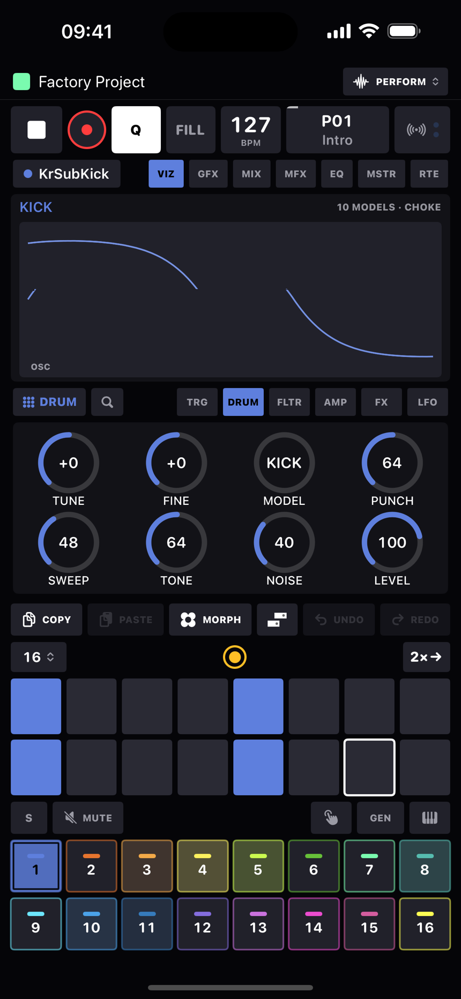
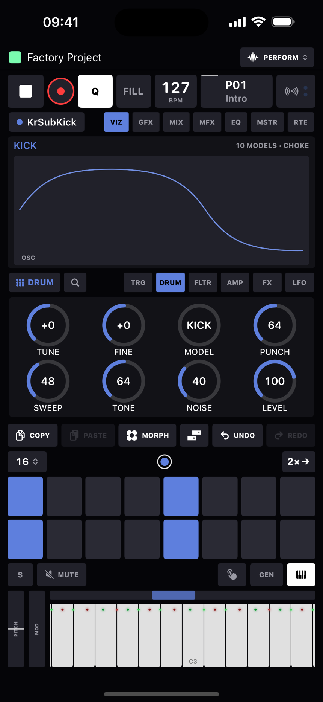
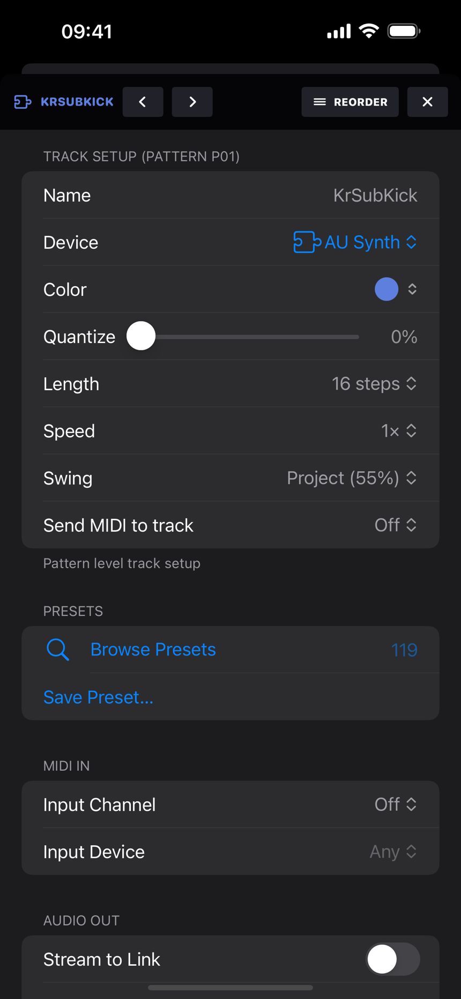

Sequencer
Sixteen tracks, sixteen patterns, and a step grid where any step can carry its own pitch, chord, length, timing, probability and a pile of parameter locks. This chapter is the heart of the app.
The shape of a pattern
A project has 16 patterns, P01 to P16, and you can name them. Each pattern has 16 tracks, and each track hosts one device. Within a pattern every track gets its own length, anywhere from 1 to 128 steps (16 to a page), its own speed from 1/8× up to 4×, and if you want it, its own swing. So a 12-step hi-hat against a 16-step kick is nothing special, it's just two tracks of different lengths.
A step is a sixteenth note split into 24 ticks for micro-timing, so a nudge can go from −23 to +23 ticks, which is just short of a whole step either way. Tempo runs 30 to 300 BPM and swing 50 to 80%. Each pattern can also hold a scale and a root note, with 22 scales to pick from, or Chromatic to turn that off.
Trigs
Tap a step to put a trig on it. Tap it again to clear it, and clearing really clears: everything the step was carrying goes with it, so if you put the trig back it starts fresh. Every value a trig can hold is optional. If it's unset the step follows the track default, and if it's set it's a lock on that step and shows amber in the editors.
| Field | Range | Notes |
|---|---|---|
| NOTE | C-2 to G8 | Unset means the track's default note. A trig can hold up to 6 chord voices. |
| VEL | 0 to 127 | 0 reads as GHOST: a silent trig that only sounds if a live velocity offset lifts it. |
| GATE | 1/24 of a step to 128 steps | Whole steps read plain ("1"), fractions get decimals. |
| NUDGE | −23 to +23 ticks | Nudging step 1 early wraps round to the end of the loop. |
| PROB | 1 to 100% | Rolled after the condition passes. Both have to come up. |
| COND | see below | The trig condition. |
| RETRIG | OFF, 1/4 to 1/64T | Repeats the hit at that rate until the gate runs out. |
| P-locks | any knob | Parameter values for this step only. On MIDI tracks they go out as CCs. |
Trig conditions
A condition decides whether the step fires at all on a given pass. The ¬ versions are the opposite of the plain ones.
| Label | Fires… |
|---|---|
| - | Every time. The default. |
| FILL / ¬FILL | Only while you're holding FILL, or only while you aren't. Holding FILL flips every one of these at once. |
| 1ST / ¬1ST | Only on the first pass after you press play or switch pattern, or on every pass except that one. |
| PRE / ¬PRE | Only if this step fired last time round, or only if it didn't. |
| NEI / ¬NEI | Only if the last conditional step on the track above fired, or only if it didn't. |
| LST / ¬LST | Only on the last pass before a queued pattern change, or on every other pass. |
| 1:2 to 1:8 | Cycles: pass n of every m. 1:2, 2:2, 1:4, 2:4, 3:4, 4:4 and 1:8. |
Retrig (ratchet)
Pick a rate from 1/4 to 1/64T on a step and it repeats the hit at that rate for as long as the gate lasts. That's the whole trick: the GATE knob is the length of the roll, so to get more hits you stretch the gate rather than counting anything. You can set a retrig as a track default too, so every step rolls unless a step says OFF. On a sampler with Voices above 1 the hits overlap and ring into each other; on a mono device each one chokes the one before. The piano roll draws divider lines on a retrigged note, and on the step grid the pad shows the rate.
Parameter locks
Here's the rule, and it's the same one the classic hardware grooveboxes use: while a step is latched, every knob on every page writes to that step rather than to the track. Hold a trig until it latches (the TRG editor opens), turn anything, and the knob's arc goes amber while the step gets an amber notch in its corner. Unlatch and you're editing the track's base sound again.
- Double-tap a knob to clear its lock. Double-tap also puts any value cell back to the track default.
- On a MIDI track a lock is a real CC, sent just ahead of the note. The setup knobs lock as well, so one step can switch channel or send a bank and program change.
- A step's note and its locks share one probability and condition roll. They play together or not at all.
- The display follows along: with a step latched, the filter curve, the envelopes and the rest of the visualizer show that step's locked values rather than the track's.
Editing on the grid
- Holding a step for about a fifth of a second latches it. Hold more steps and the selection grows, and every edit then lands on all of them. A tap moves the latch to a new step, and tapping any selected step drops the lot.
- COPY and PASTE look at what's latched. With a step latched they copy that step, and a multi-selection keeps its spacing and lays back out from wherever you paste. With nothing latched they work on the whole track, and PASTE turns into a menu: Paste Whole Track, Paste Sequence or Paste Device.
- A single copied step pastes onto every step in a selection at once.
- UNDO and REDO keep 50 project-wide snapshots. Quick runs of edits are grouped into one.
- The strip above the steps has the length picker, the page dots, the follow-playhead toggle and 2×→, which doubles the loop and copies the content into the new half. Hold a page dot to loop just that page; it gets an amber ring. That's a section loop, next.
Section loops
A section loop replays part of the pattern in musical time. The region is a span of bars, so a half-speed track, a 2× track and a 32-step track all replay the same bars together and stay in phase, whatever their own lengths. Hold a page dot to loop that page, or drag along the piano roll's ruler to draw braces.
- While playing, the loop takes effect on the next bar line and restarts the section from its first beat. If you're stopped it applies at once, and play starts from the top of the loop.
- Letting the loop go doesn't jump anywhere. Playback just carries on from wherever the looped playhead was.
- A loop survives stop and start. It ends when you turn LOOP off, tap the page ring, or switch pattern. It's a live move and never saves.
- Recording under a loop puts the notes where you heard them, in the looped bars, not at the transport's raw count.

Track defaults
With nothing latched, the TRG page shows the track defaults: NOTE, VEL, GATE and NUDGE over PROB, VEL SEN, COND and RETRIG. This is what every unset step inherits, so it's where the track's default note (the pad's pitch), its default gate and its default probability live. VEL SEN is how much velocity affects the level. Defaults belong to the pattern, like the rest of the track setup, so a track can play a different note or roll by default from one pattern to the next. Loading a sound preset leaves them alone.
Recording
Arm REC and play something. The on-screen keyboard, a MIDI keyboard and the pads in PLAY mode all record. Pad hits land on the pad's own track; keys and MIDI land on the selected track.
- Hits snap to the nearest step and the difference is written as nudge, so the feel is kept. Gates round to the nearest half step. Notes played together become a chord, up to 6 voices.
- Q is record quantize: lit, hits snap hard to the step. Hold Q for the quantize panel, which has a global slider and one for the selected track. Those two are playback quantize, always on and independent of the Q light, pulling micro-timing toward the grid by whichever of the two is larger. Nothing is rewritten.
- Turn a knob while recording and it writes an automation lane at full tick resolution. Recording over an old sweep replaces it rather than mixing the two. Clear a track's lanes from its track sheet.
- Count-in is off, 1, 2 or 4 bars and only applies when recording. It's in the tempo panel along with the metronome and its level.
Transport bar
| Control | Does |
|---|---|
| ▶ / ■ | Play and stop. |
| ● REC | Arms recording. It only writes while playing, and a red strip sits across the top of the bar while it's hot. |
| Q | Tap for record quantize, hold for the quantize sliders. |
| FILL | Hold it and every FILL and ¬FILL condition flips. Lights amber while held. |
| BPM | Drag up or down to change tempo. Tap for the tempo panel: slider, TAP tempo, swing, metronome and level, count-in. |
| Pattern | The active pattern's name and label. It pulses white and amber while a switch is queued. Tap for the pattern grid. |
Patterns
The pattern sheet is a four-by-four grid. Tap a pattern to queue it for the next pattern boundary (its pad gets a pulsing amber ring), or hold it to jump straight away with every track keeping its place. While stopped, a tap just selects. Hold for the menu: Restart Now, Play Once Then Return, Name, Copy Current Here, Copy Pattern, Paste Pattern, and Clear. Copy Pattern and Paste Pattern work across projects: copy a pattern here, open another project, hold a slot there and paste. The whole pattern comes along: trigs, per-pattern sounds and devices, mutes, morphs and scale.
The SCALE row sets a root and scale for the pattern. The live keyboard and the piano roll then light a green LED on the notes that are in the scale and a red one on the notes that aren't, and QUANTIZE TRIGS folds any notes you've already written into the scale.
Song mode
A song is a list of rows, each one a pattern and a repeat count from 1 to 32, up to 99 rows long. A row can also recall a morph as it comes in. Turn SONG MODE on and press play and the list runs from the top, looping if LOOP is on, otherwise sitting on the last pattern when it gets there. Reorder rows with the drag handles. Picking a pattern by hand drops you out of song mode.
A project can hold 16 songs. The strip above the rows picks the active one: tap a chip to switch (mid-playback the new song's first row comes in at the next pattern boundary), tap + for a new song, hold a chip to rename, duplicate or delete it. Each song has its own rows and its own LOOP setting and everything saves with the project. EXPORT in the same toolbar bounces the song to a WAV; see Exporting a song.
Mutes, pads and live modes
The sixteen pads at the bottom are the tracks. They flash with every note, and tapping one selects its track the moment your finger lands. The row above changes what a pad does:
| Mode | Pads become |
|---|---|
| MUTE | Mute buttons. There are two scopes, GLOBAL (survives pattern changes) and PTN (saved with the pattern), and a track is silent if either has it muted. Slide a finger across pads to paint mutes. |
| PLAY | Finger drums. Touch fires the track's default note, lift releases it, and REC records the hits onto each pad's own track. |
| GEN | Generators: two Euclidean pulse generators per track, combined with OR, XOR, AND or SUB, plus an arpeggiator with UP, DOWN, U/D, D/U, CONV, DIV, ORDER and RND, 1 to 6 octaves and a gate from 25 to 100%. The GEN button wears an outline in the track's colour while the selected track is running either one. |
| KEYS | The live keyboard, below. |
The live keyboard
- The whole 128-note range, with a scroll strip above it. The strip is the full range and the lit part is what's on screen. Each track remembers where you left it.
- Proper multi-touch: one finger per note. Slide a finger across keys for a glissando while the others hold a chord.
- Velocity comes from where you land on the key: soft near the top, 127 at the bottom.
- With a scale set, a small LED near the top of each key says whether it's in the scale (green) or not (red). Every key still plays. Keys light up in the track colour when you press them, when the sequencer plays them, or when MIDI from outside holds them.
- The PITCH wheel springs back to centre. On a MIDI track it's real pitch bend; on an internal device it bends ±2 semitones. The MOD wheel stays where you leave it, sends CC 1 on MIDI tracks and moves the filter cutoff on internal devices, and it records.

Track setup
Tap the track name above the knob pages to open the track sheet. It's split into cards, and the split tells you how far a setting reaches:
- Track Setup (Pattern P01) is per pattern, so everything on it can be different in another pattern: name, device, colour, sampler Voices (1 to 8, where 1 chokes each hit with the next and more lets them ring), the track's own quantize, length, speed, swing, Clear Recorded CC Automation, and Send MIDI to track. The knob names and the track defaults are per pattern too.
- Presets is where you browse the preset library or save the track's sound as a new preset.
- MIDI In is project-wide: the Input Channel this track answers on (Off unless you set one) and, if you like, the one Input Device it listens to. See getting MIDI in.
- MIDI Out shows on MIDI tracks: the output this pattern's notes go to (per pattern) and the channel they go out on (project-wide).
- Audio In also shows on MIDI tracks: the interface input your synth's audio comes back on. See the audio return.
- Audio Out is project-wide wiring that stays put across patterns: Stream to Link, which gives the track its own Link audio channel, and the audio output, either the master or a pair or single channel on your interface. It's there for internal devices and for MIDI tracks with an audio return.

Reordering tracks
The sheet's header works like the piano roll's: the chevrons step through the tracks, and REORDER opens a list of all sixteen with drag handles. A switch at the top sets how far a move reaches:
- All Patterns moves the track in every pattern, and everything travels with it: colour, sound, trigs, p-locks, mutes in both scopes, morph captures, MIDI sends, the sidechain key, and any controller bindings pinned to it. The only thing that stays behind is an untouched default name like "Track 5".
- This Pattern moves it in the active pattern only, the way the hardware boxes do. The content, sound, device, colour, defaults and knob layout go to the new slot in this pattern along with the pattern's mutes, morph captures and sends. The other patterns keep their order, and the slots' project wiring (MIDI channel, audio out, Link stream) and bindings stay where they are.
A move is one undo step. One thing to keep in mind: NEI conditions watch the track directly above, so moving tracks changes what they listen to.
Sending a track to another track
Send MIDI to track picks a second destination. Everything this track plays, sequenced or live, also plays that track's device on its channel at the same moment. A track that receives a send can pass it on, so A → B → C stacks three devices on one sequence, and a chain that would loop back on itself is cut. The receiving track records the forwarded notes if REC is armed.